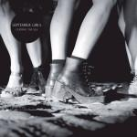

Music Reviews
-

Bruce Springsteen High Hopes
The Boss sets expectations high with this new collection of cover songs and re-imagined version of past classics.
Dominic James Stevenson reviews... -

I Break Horses Chiaroscuro
I Break Horses' second album is a study in light and darkness. Throughout these nine songs, those two moods are presented together, separately and in segments. While many of the tracks do prove that opposites attract, there are some stumbles along the way.
Joe Marvilli figures out what the album name means... -

September Girls Cursing the Sea
The Dublin quintet's debut effort embraces blissful dissonance with a sweet disposition, blending chiffony harmonies set against shambling melodies marbled with a dark tint over them.
Juan Edgardo Rodríguez reviews... -
Sharon Jones & the Dap Kings Give the People What They Want
The Georgia soul singer revisits the the past with such aplomb that it’s impossible not to be taken by its charm.
Dominic James Stevens reviews... -

Stephen Malkmus & the Jicks Wig Out at Jagbags
The venerable Pavement member releases fourth effort with the Jicks after 2011's Mirror Traffic.
Gabbie Nirenburg reviews... -
Midlake Antiphon
Midlake's new one is catnip for music critics.
Alan Shulman reviews... -

Bill Callahan Dream River
Bill Callahan's latest is just as connected to Mother Gaia as any of his previous albums, but does it match the same benchmark for quality?
Andrew Ciraulo has been meditating on this one for quite some time... -
Britney Spears Britney Jean
It's the sound of a 90s era Britney being attacked by will.i.am and his sonic perversions, interspersed by some cutely awful ballads.
Luiza Lodder tries really hard to like Britney's latest effort... -

Blood Orange Cupid Deluxe
The prolific Dev Hynes returns with his second solo effort as Blood Orange. After Lightspeed Champion and an underwhelming debut, will Cupid Deluxe leave you lovestruck?
Ben Jones is enamored... -

Paul Ferris Witchfinder General OST
45 years after the low-budget horror flick caused a brouhaha at the BBFC, Paul Ferris' accompanying soundtrack finally sees a release.
Joe Rivers is afraid. Very afraid...